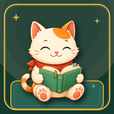

Welcome!
Learn Chinese words by playing — a couple of minutes a day.
New to HSK? Start with HSK1 — you can change this any time.
Lucky Cat Street
0 coinsMore
Helps improve the game. No personal info, no word history. Off by default.

Lucky Cat HSK — learn the words that actually appear on the test
Choose your words
Word Quest complete
Tone Trainer
Which tone did you hear?
Best Sessions
Profile
Lucky Learner
Sticker Album
Collection
New stock at midnight
How to play
Follow Lucky Cat along the Lantern Trail. Each stop presents a Chinese word with pinyin.
Choose the correct meaning to light the next lantern. Consecutive first-try answers build Lucky Flow.
Missed words return. A wrong tap reveals the answer and adds the word to your Review Pouch, so you can learn it when it returns.
If time runs out, the answer is revealed and the word returns soon. Your Word Quest continues until every planned word is learned.
Every tenth planned word becomes a two-step Review Challenge: meaning first, then reverse recall.
Finish every planned word to receive a results postcard with learned words, extra practice, rewards, and your next review.
Every word shows pinyin and can be heard aloud — during the Word Quest, in flashcards, and in extra-practice review.
Learn mode drills the same word pool as flashcards first, so you can study, then play.
Some example sentences from Tatoeba (tatoeba.org), CC-BY 2.0 FR.